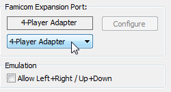

Содержание
Беспроводной или USB геймпад нужно подключать до запуска эмулятора, иначе эмулятор его не увидит.
В эмуляторе выбери Config -> Input. Откроется окно Input Configuration.
Некоторые игры могут автоматически переключать опцию Famicom Expansion Port. Например, игра Arkanoid может включить Arkanoid Paddle, после чего управление частично перейдет на мышку. По умолчанию должно стоять "none".
Клавиши управления могут конфликтовать с горячими клавишами эмулятора. После настройки управления загляни в Config -> Map Hotkeys -> Filter -> Assigned, где отображается список всех назначенных горячих клавиш. При необходимости перенастрой конфликтующее управление/горячие клавиши.
Выбери опцию из списка, чтобы посмотреть пример по настройке управления.
| Игрок 1 | Игрок 2 | Игрок 3 | Игрок 4 | Адаптер на 4-х игроков |
В окне Input Configuration, в разделе Port 1 убедись, что включена опция Gamepad.

Далее нажми кнопку Configure, откроется окно Gamepad. Управление 1-му игроку настраивается в разделе Virtual Gamepad 1

Кликни на одну из 8-ми кнопок, например кнопку Up (вверх), окроется дополнительное окно Up.

Кнопка Clear сбрасывает настройки кнопки, кнопка Close закрывает окно и сохраняет настройки.
Здесь дважды нажми на клавиатуре/геймпаде ту клавишу, которая будет отвечать за кнопку Up в игре. После двойного нажатия клавиши кнопка будет настроена, и окно Up автоматически закроется.
Аналогичным образом настрой управление на оставшиеся кнопки. После завершения настройки закрой окно Gamepad.
При желании можно назначить до 4-х различных клавиш. Для этого нужно по одному разу нажимать на те клавиши клавиатуры/геймпада, которые тебе нужны. Можно настроить управление одновременно и на клавиатуре, и на геймпаде.
Для завершения настройки дважды нажми на последнюю используемую клавишу, или кликни на кнопку Close. Настройка автоматически закроется, если были настроены все 4 клавиши.
В окне Input Configuration, в разделе Port 2 включи опцию Gamepad, затем нажми кнопку Configure.

После чего в окне Gamepad настрой управление 2-му игроку в разделе Virtual Gamepad 2.

Пример настройки смотри в разделе "Игрок 1".
В окне Input Configuration нажми кнопку Configure в разделе Port 1, затем в окне Gamepad настрой управление 3-му игроку в разделе Virtual Gamepad 3.
Пример настройки смотри в разделе "Игрок 1".
В окне Input Configuration нажми кнопку Configure в разделе Port 2, затем в окне Gamepad настрой управление 4-му игроку в разделе Virtual Gamepad 4.
Пример настройки смотри в разделе "Игрок 1".
Чтобы управление 3-го и 4-го заработало в игре, нужно дополнительно выставить одну из двух опций в окне Input Configuration.
В зависимости от игры, нужно выбрать одну из этих опций. Если ты выбрал первую опцию, а управление в игре не заработало, значит ты не угадал. Отключи ее и выбери вторую опцию.
Эти 2 опции могут конфликтовать между собой, выбирай только одну из них.
По умолчанию галочка не стоит.

По умолчанию None.
